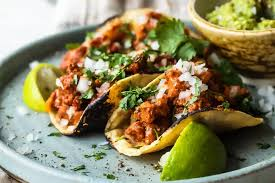

7.Ciudad De México

- Platillo: Tacos al pastor
- Ingredientes: Carne de cerdo adobada, piña, cebolla, cilantro, tortillas de maíz.
- Historia: Creado por migrantes libaneses en los años 20 como versión mexicana del shawarma.
- Dato curioso: Son el taco más consumido en el país y han sido reconocidos mundialmente.